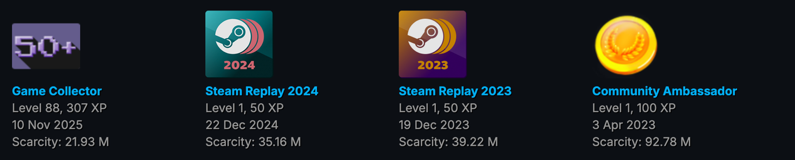

Steam Powered Carr
This site presents personal reviews of the Steam games I play. Each review includes a score, a summary of my experience, and screenshots from the game. Visitors can explore games by genre, release year, playtime, or personal rating. This project grows over time, so the number of reviews will increase as more games are played. The site is designed to be easy to navigate and visually appealing, with a modern layout that highlights each review.
